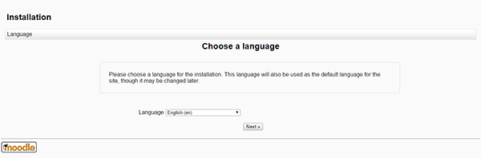
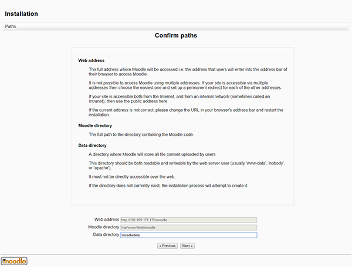
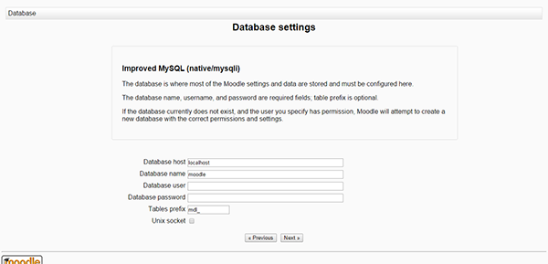
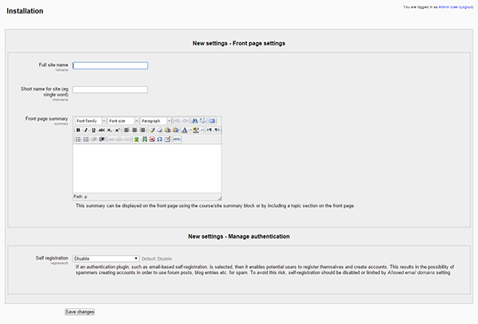

Install and configure Moodle on your LAMP server on Ubuntu, PHP, Applications
Install and configure Moodle on your LAMP server – Ubuntu
Difficulty: 1
Time: 30 minutes
Moodle is an acronym for Modular Object Oriented Dynamic Learning Environment. It is an open source Course Management System that enables the creation of an online learning site. Moodle has default features with an easy-to-use interface, personalized dashboard, progress tracking, and many other features. In administration, Moodle offers customizable site design and layout, secure authentication and mass enrollment, bulk course creation, and an easy backup.
Install LAMP
To use this article, you need to have a LAMP stack installed on your server.
We also recommend setting up an Apache virtual host for the domain name you want to use, which includes pointing your domain name to it.
Install the required dependency
- Install the necessary components for setting up and using Moodle.c These include
git, unzip, and several needed PHP code libraries.
sudo apt-get update
sudo apt-get install git unzip php5-curl php5-xmlrpc php5-intl php5-gd php5-mysql
- Restart the Apache services to make the changes active.
sudo service apache2 restart
Configure Moodle
- Navigate to your virtual host directory for the domain name:
cd your domain's Apache virtual host directory
If you didn't set up a virtual host directory, you can use cd /var/www/html
- Use
git to download the Moodle source:
sudo git clone -b MOODLE_30_STABLE git://git.moodle.org/moodle.git
This will get a complete copy of the Moodle repository, place it into the moodle directory, and switch it to the 3.0 Stable branch.
- Change directory ownership for your this directory to the
root user. This is for security reasons, where you prevent the web server user from writing to the application files.
sudo chown -R root:root /your domain's Apache virtual host directory/moodle
- Create a directory for Moodle to use for its temporary operations that can't be accessed from the web:
sudo mkdir /moodledata
- Make this directory writeable by Apache:
sudo chown www-data:www-data /moodledata
Create a database
Moodle's a dynamic application, so it needs a database. Make sure to keep the database's credentials handy because you'll need them later on in the application install.
- Create a blank database:
mysql -u root -p
CREATE DATABASE your moodle database;
- Create a user for this database.
CREATE USER your moodle user@localhost IDENTIFIED BY 'your moodle user password';
- Grant this user permissions to your new database.
GRANT ALL PRIVILEGES ON your moodle database.* TO your moodle user@localhost;
- Check to make sure that the privilege changes take by using SHOW GRANTS:
SHOW GRANTS FOR 'your moodle user'@'localhost';
If the privilege changes did not take, you can use FLUSH to reload the cache and activate the user.
FLUSH PRIVILEGES;
- Exit MySQL to return to your normal command prompt:
exit
Install Moodle
- Go to http://your domain name or IP address/moodle.
- Choose a language, and then click Next.

- Set the Data directory that you created earlier, and then click Next.

- Select Improved MySQL (native/mysqli) for your Database Driver,then click Next.

- Enter the database credentials to connect with the database, using the credentials you created earlier. Once this is complete, click Next.

- You will get an error that your configuration file cannot be saved; this is intentional. Copy the text for this configuration file for later use.
- Back in your command prompt, create the
config.php file:
sudo vim moodle/config.php
- Paste the configuration file code that displayed.
- Save and close the file:
:wq!
- Back in your browswer window, click Next.
- Agree to the Moodle Terms and Conditions by clicking Continue.
- After the configuration is complete you will see Server Checks. These should be OK across the board. Once you have confirmed the server checks, click Continue.
- Moodle will install. Once the installation is complete, click Continue.
Update the site profile
- Update the profile for your site, fill the mandatory information fields, and then click Update profile.

- After updating the profile, you will be redirected to the Front page settings page. Enter your site name.

- Click Save changes. You will be redirected to the Moodle Home page, where you can manage your courses and web site.
That's it! You can now start using Moodle.